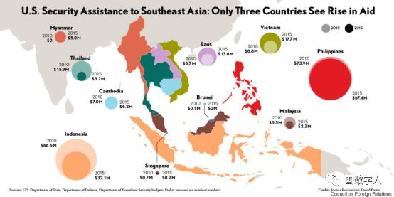
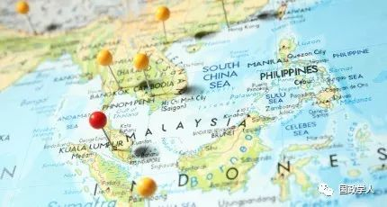
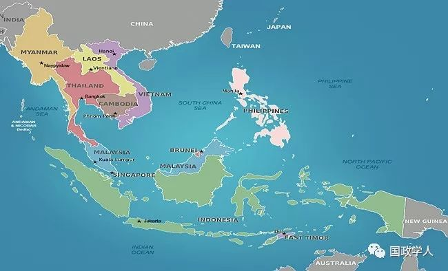

收录于合集

简 介
【作者】 蔡鹏鸿 ，上海国际问题研究院美洲研究中心研究员，主要研究美国东亚关系和中国周边外交。
**【 编辑】**周雨橙
【审校】 高嘉琳、扎西旺姆
【来源】 《现代国际关系》，2019年第1期，第30-37页
内容提要
美国正在调整其亚洲及东南亚战略，对东南亚实施“再保障”政策。这是在国际战略环境发生重大变化的背景下进行的战略调整，基本宗旨是确保美国在印太地区政治经济安全架构中的领导地位，削弱中国对东南亚地区的影响力。美国重塑其东南亚政策，可能要强迫东盟国家领导人作出战略选择，减少东盟国家对中国的依赖。美国将通过改进在东南亚的军事存在、加强盟友和安全伙伴关系建设、强化南海航行自由、推进经济合作、推行自由民主价值观等来实施“再保障”。美国东南亚政策调整的特点是:以“有原则的现实主义”为指导; 进攻性大于防御性; 竭尽全力修补印太战略地带中的脆弱板块东南亚。美国东南亚“再保障”政策对中国的周边环境带来新的变数和挑战，中美两国围绕印太战略的竞争将聚焦在东南亚。笔者拟从坚持“亲诚惠容”政策、认清周边地缘政治环境变动、主动应对海上挑衅、敦促东盟坚守南海问题解决的政治原则，共同反对域外海空军力量进入南海等等方面提出政策建议。
【 关键词 】 再保障 美国与东南亚 周边外交 东盟

正文
近期，从美国一些智库发表的研究报告、国会两院提出的法案和白宫高官的演讲中可以发现，美国正在调整其亚洲及东南亚战略，对东南亚实施“再保障”( Reassurance) 政策。美国新战略针对性明确，要在浩渺的两洋即从太平洋到印度洋之间修补海上安全链条。美国调整东南亚政策，既同当前的国际战略环境和大国关系变动相关，也与东南亚地缘政治因素相干。本文着眼于美国对亚洲战略的规划及其对东南亚政策的调整，从国际格局变化和大国竞争关系着手，分析其政策变化及调整的总体目标、基本内容、主要特点和实施途径，最后论及其对中国的挑战与应对思考。
**1
**
“再保障”政策出台的大背景
新世纪以来，中国经济和军事崛起冲击着美国主导的国际和地区秩序，削弱了美国在全球事务中的领导地位，尤其是其在亚太地区的主导作用。奥巴马政府“亚太再平衡”战略试图重塑地区政治经济和安全秩序，其抓手就是东南亚。奥巴马政府对东南亚外交精心部署，从政治、安全、经济和文化各领域全面推进，是近30年来美国对东南亚地区最为关注和重视的行政当局。特朗普上任初期未把东南亚地区作为对外政策的最优选项，似乎是想让美国东南亚政策回归历史常态。但是特朗普竞选以来逢奥巴马必反，上任后首先从退出TPP着手，“亚太再平衡”战略一夜受损，招致美国及其亚太盟国政商学界的抱怨和批评，即使一些亲美的东南亚政府官员也焦虑地关注着飘忽不定的美国政策。不过情况正在或者已经发生变化，特朗普政府试图在规划美国亚洲战略的过程中实施东南亚“再保障”政策。政策调整的大背景可以从战略环境变动的若干项因素中加以分析。
首先，美对华定位发生重大转变。近20年中国稳扎稳打迅速崛起的现实给美国各派政治力量以极大冲击，中国被视为是国际政治舞台上对美国产生最大挑战的国家。特朗普政府把中国列为新时代大国战略竞争的主要对手，一年内先后公布的《国家安全战略》和《国防战略》两份重要文件表明，美国国家安全领域的核心关注点已经从反恐转向大国间斗争。美国重提大国竞争概念，似乎也是让美国国家安全战略回归历史常态的做法。不过，与历史上其他时期的大国竞争态势有所不同，特朗普政府把美国战略的主要对手瞄准中国，认为中国不仅仅是对手(rival)，更是敌手(adversary)。特朗普本人更倾向于敌手甚至敌人的提法，他在参加总统竞选一开始就把中国列为敌手，甚至在其2015 年出版的著作中已把中国斥为“敌人”，他说:“有人希望我不要把中国说成是敌人(enemy)，但是，中国就是实实在在的敌人。”特朗普当选总统后，美国决策层和华盛顿智库精英们对国际战略环境的思考与判断带有鲜明的特朗普烙印，是美国战略思维的重大转换，东南亚政策调整有其明确的指向性和针对性。
其次，特朗普政府以“印太战略”取代“亚太再平衡”战略。奥巴马政府的“亚太再平衡”战略从防务、发展和民主(即所谓3D) 几方面介入东南亚，作为其对东南亚给以保障的政策取向，同时通过稳定美中关系，进行竞争性合作，达到继续主导地区国际秩序的目的。特朗普政府批评“亚太再平衡”战略是失败的政策，取而代之的是“印太战略”，把围堵和遏制中国的地域从太平洋经由东南亚扩展到印度洋。特朗普政府认为，中国在南海、东南亚以及马六甲海峡以外海域的行动挑战了美国主导的印太地区秩序:“中国正在运用自己的军事现代化、影响力和掠夺式的经济活动来胁迫邻国，试图改变印太地区的秩序，使之有利于中国。中国的经济和军事力量在持续上升，通过长期的全方位政府战略发挥实力……近期目标是寻求获得印太地区的霸权，并在未来取代美国、取得全球的主导地位。”美国提出的印太战略把中美战略竞争场所从东亚地区一下子延伸到印度洋区域，从战略实施的资源配置上实际上是难以实现的。美国学者沈大伟( David Shambaugh)认为，把中美战略竞争放在太平洋和印度洋的大背景下来考虑实施，暂时似乎做不到。只要看看地图就明白了，东南亚无疑会日益成为中美两国地缘政治竞争的核心地区。毫无疑问，特朗普政府的印太战略针对中国，但是，其初始步骤就是要把中国从东南亚挤压出去。
再次，东南亚存在安全缺陷。在美国主导的亚太安全架构上，美国自信对东北亚安全局势具有很强的掌控能力，美国的军事存在以驻军和军事基地最为显著，驻韩美军常年保持在28500人左右，驻日美军50000人左右，美国在日韩还建立了许多海空军基地;在日韩以外的西北太平洋地区，沿美国本土阿拉斯加州向南，关岛是美国重要的海空军基地，太平洋中区还有夏威夷诸岛军事基地托底;在大洋洲地区，澳新两国是美国传统上的军事盟友，美国在澳大利亚开辟了可以轮换美军的驻军基地;在印度洋地区，美印关系在特朗普执政后更加紧密，印度已经成为亚洲地区继日韩两国之后第三个可以获得美国高精尖军事装备的国家。但是，美国在东南亚的军事布局不如亚太其他地区，这是军事前沿部署上的不足，致使东南亚呈现出安全上的薄弱一环，是军事部署上的脆弱点。美国认为需要加紧介入，给东南亚以安全保障，落实《国防战略》报告提出的要在这个地区“构建网络式安全防务架构”的政策要求。
由上所述，国际和地区战略环境变动特别是大国关系变化是美国东南亚政策调整的基本背景，在特朗普执政之后，美国对国际战略环境的判断带有鲜明的特朗普烙印，是美国战略思维的重大变换。特朗普政府提出印太战略，将中美竞争的区域从太平洋扩大到印度洋，要真正完善这一战略，美国必定要调整其东南亚政策，以修筑篱笆的办法修补其安全架构上的缺陷和不足，给东南亚以“再保障”。

**2
**
“再保障”政策主要内容
近期美国政府和华盛顿智库发表的东南亚政策文件和研究报告，大致有三类。第一类是国会法案和听证会，如国会参众两院一致通过《2018 亚洲再保障倡议法》并于2018 年12 月31 日获得特朗普总统签署，众议院两位议员瓦格纳(Ann Wagner) 和卡斯特罗(Joaquin Castro) 于2018 年9月3日提出《东南亚战略法》，以及国会举办的相关听证会。第二类是政府官方文件和讲话，如《国家安全战略》报告，特朗普2017 年11 月在越南APEC 会议上发表的演讲，彭斯副总统及国务卿等高官的演讲文本等;第三类是美国智库发表的研究报告，包括企业研究所发表“美国的东南亚战略”报告，哈德逊研究所举办的南海、海权问题以及东南亚研讨会、战略与国际问题研究中心发表的报告等。
诸多文献中，需要特别关注的是《2018 亚洲再保障倡议法》，这是通过近一年政策酝酿，在听取政府官员和智库专家意见的基础上形成的法案文本，几经修改之后成为最新版美国亚洲战略。中国内媒体报道该法案时大多强调其中的美台关系内容，其实这项法案“旨在制定拥有战略远景及全面的、多方位的、有原则的面向印太地区的美国政策”，地域范围仅包括东亚、东南亚和南亚的印度，既不涉及南亚其他国家，也不包括中亚西亚地区的任何国家，涉台内容仅是其中的一部分。本文主要涉及东南亚部分。
根据上述政策文献和研究报告，结合特朗普上任以来的政策举措和行动，美国的东南亚“再保障”政策主要包括以下这些内容。第一，以全面施压中国为目标。对于中国在东南亚以外印度洋沿线愈来愈强大的影响力，美国一方面从战略上视之为“帝国式”威胁，同时设法从印太蓝色海洋链环中的东南亚找到突破口，击破所谓恢复中的“中国朝贡式”体系，封堵中国日益提升的经济和军事影响力，把中国势力逐出东南亚、把它推回到南海北部陆地边界以内的地方。
第二，以美国主导为原则。随着中国迅速而强有力的崛起，中国积极而主动地塑造周边地区经合、政治外交和安全生态，推动着亚太地区秩序的转型，致美国战后建立并主导的亚太地区秩序式微。美国企业研究所的一份报告认为，美国不能继续疲软，而应抖起精神，在东南亚发挥作用，实现美国保障下的和平、独立和繁荣。言下之意是，不能只强调“东盟为中心”，否则就没有了美国的领导地位。众议院《东南亚战略法》强调“必须坚持美国在东南亚的坚强领导”。《2018 亚洲再保障倡议法》提出，没有美国的坚强领导，国际体系就会衰败，美国、地区乃至全球的利益都会招致损害，因此继续维护美国在印太地区的领导作用已经时不我待。
第三，深化盟友和伙伴关系建设，增强美军事存在。一是继续推进冷战时期建立起来的军事同盟关系，承诺继续实施美菲军事条约和美泰军事条约;深化同东南亚四个国家的安全伙伴关系，即同印尼、马来西亚、新加坡和越南的伙伴关系;等待时机，及时发展新的伙伴关系。二是扩大海上军事基地和后勤补给基地。鉴于东南亚地区缺乏大型而坚实的军事基地，美国目前实施海上航行自由行动的大型舰艇和飞机大多借助美国关岛基地及其设施。为对未来东南亚前沿地区实施积极的危机反应，美国需要建设并扩大其在东南亚的军事基地，包括夯实新加坡樟宜基地设施、完善菲律宾苏比克湾海军基地。美国在马来西亚、印尼、泰国等国建立了海军后勤维修补给基地，类似的军事存在可能会向越南扩大。三是向部分东盟国家提供军备，实施军官培训计划。四是建立海洋区域关注项目( maritime domain awareness programs)，同东南亚和南亚国家进行情报及信息分享、促进东南亚同日澳印等国家的多边军事合作。
第四，继续插手南海事务。一是坚持航行自由行动。到2018 年11 月底为止，特朗普政府共派遣了九批次海军舰船到南海实施所谓的航行自由行动，超过了奥巴马执政时期的四次类似行动。美国还拉拢域外国家到南海实施航行自由，日、澳、英、法等国家都已派出了海军舰船到南海搞航行自由，印度和韩国等也会借口其他方式进入南海推进航行自由行动。二是美国政府将敦促东盟成员发表共同声明，支持常设仲裁法庭2016 年7 月12 日作出的仲裁决定。三是推进双边和多边军事演习。预计2019 年美国将在南海海域同部分东盟国家海军举行联合军事演习。四是支持多边谈判解决南海海上争端，反对中国关于双边谈判解决问题的主张。五是加强军备，准备在南海同中国打仗。2018 年新上任的太平洋司令部司令菲利普·戴维森(Philip Davidson)海军上将认为，“中国已经能够有效控制南海制海权”，美国要想夺回南海控制权的唯一办法就是“战争”。国防部助理部长薛瑞福(Randall Schriver)在另一个场合表达了基本相同的观点，主张必要时美国将在南海地区同中国对抗。
第五，扩大经济合作。一是继续支持奥巴马政府建立的“美国－东盟联通”计划。特朗普政府提供1．13 亿美元“首付款”资助，大部分用于东盟地区的数字联通、能源和基础设施项目，其中2500 万美元用于建立数字连通和网络安全建设、5000 万美元用于亚洲能源增进发展和增长行动计划、3000 万美元作为种子基金用于基础设施建设。二是规划融资600 亿美元用于基础设施建设。国务卿蓬佩奥提出的这个融资规划来自参议院提出的“2018 建设法案”(S．2463 － BUILD Act of 2018)，其目的在于对抗中国的“一带一路”倡议。美国主张建立“高质量的透明的基础设施项目”，让东南亚和印太地区国家有“一个公正、透明的选择，以取代中国的债务陷阱外交”，击退“帝国式”的掠夺，同东南亚和印太地区其他国家在自由、公平和互惠原则基础上建立经贸关系，给东南亚提供支持。美国支持东盟经济发展的同时，要求东盟进入印太轨道，同地区内的美国盟友和伙伴建立更强的“经济政治和安全伙伴关系”，包括亚太地区日、韩、澳、加、新( 西兰) 及台湾地区，甚至欧盟国家。其用意十分清楚，让东盟远离中国。
第六，传播美式民主。美国认为，促进人权、尊重民主价值观、实施良好政府治理，符合美国国家安全利益。美国政府将东盟国家划分为享有自由、部分享有自由以及没有自由的国家。特朗普政府将以口诛笔伐甚至实际行动对生活在暴力政权下的人民给以支持。所谓口诛笔伐，就是要以各种方式宣讲美式民主，同时对于亚洲地区的暴力政权给以揭露和批判。所谓实际行动，就是对于那些被美国认定“没有自由”的国家实施各种反制措施，包括使用外交手段、经济制裁及其他方式来孤立那些威胁美国利益和价值观的国家和领导人。以拨款援助为例，美国国会拨款委员会将在2019 ～ 2023 年间向印太和东南亚地区每年提供15 亿美元的对外资助，柬埔寨、老挝和缅甸就无缘受援，因为它们是“没有自由”且镇压国内人民的政权。
概而言之，在坚持美国领导的政治原则下，特朗普政府通过外交、军事、法律、经济等手段推进东南亚“再保障”政策，在区域内坚定不移地构筑美国的军事存在，击退中国在南海的“侵略性行动”，维护并确立规则基础上的地区秩序，要求东盟国家集体维护常设仲裁庭2016年对南海问题作出的错误判决，美海军高官提出了在南海可能使用武力的对抗手段，向中国提出了重大的挑战。为了笼络东南亚国家，美国提出了一些经济援助方法，同时要求接受美国援助的国家，必须接受美式价值观。

**3
**
** 主要特点及前景**
从1977 年美国同东盟建立对话关系以来，双边合作已经有40 年以上的历史。前30 年，美国同东南亚的关系基本上处于若即若离状态，这同越战之后美国国内出现的越战综合症有关。2009 年美国正式加入《东南亚友好合作条约》、2015 年双方签署《战略伙伴关系协定》，同东南亚建立了紧密关系，似乎美国对东南亚实施的保障性政策从奥巴马政府就开始酝酿，但特朗普政府对东南亚“再保障”政策同前者不同，主要有以下特点。
第一，以“有原则的现实主义”为理论指导。奥巴马政府执政初期，时任副国务卿的詹姆斯·斯坦伯格(James Steinberg)曾提出“战略再保障”(Strategic Reassurance)政策主张，指中美双方相互做出一个约定，美方及其盟友对于崛起中的大国中国表示欢迎或者接受，作为另一方的中国也得向美方及盟国保障其安全和福祉。承认并保障相互存在的共同利益，增强互信，经由持续对话实现战略性保障。但是随着奥巴马政府进一步强化“亚太再平衡”战略之后，斯坦伯格对中美双方能否继续实现“战略再保障”有所犹疑，在2014 年提出了中美关系到达了十字路口的观点，不过还是希望“战略再保障”能够获得正面效果，提出了双方应该坚定决心，为避免进入“修昔底德陷阱”作出贡献。根据这一理论，奥巴马政府的东南亚政策尽管含有安全保障倾向，但不是以对抗中国为代价。特朗普政府则不同，公开的指导思想是“有原则的现实主义”。实际上，特朗普的外交政策思想更加激进和极端，他入主白宫后公布的六大执政目标之一，是追求强大的军事力量，“以实力谋求和平”是其外交政策的核心理念。由此可见，他不是一个对政治一无所知或者没有意识形态倾向的政治庸人，他拥有十分清晰的美式传统意识形态和价值观，也熟悉国内政治风向、了解军工利益集团在美国政治系统中的作用。特朗普在对待亚洲事务上同样如此，要让亚洲各国为美国买单，当然不会轻易放过“敌人”中国。特朗普政府的外向性、进攻性特征，凸显其施政逻辑与斯坦伯格提出的“战略再保障”理论截然相反。
第二，进攻性大于防御性。特朗普和奥巴马两届政府对地缘政治作出了具有各自特色的定位。对地缘政治的假设和定位是美国现在调整其东南亚政策的前提。尽管奥巴马政府后期关注印度洋海上安全问题，但是其亚太战略并未全面而积极地纳入印度洋地区。奥巴马总统当时一上台就实施“回归东南亚”政策，似乎要在外交安全上对东南亚实施“战
略再保障”的姿态。但是，在处理中美关系上美国维持相对平稳的伙伴关系，而不是要同中国进行全面对抗。特朗普政府则不同，把中美关系定位为战略竞争关系，从政治经济军事等全面对抗。特朗普政府调整东南亚政策，除了给东南亚实施战略保障外，还向另一方的中国以极限施压，两个方向似乎平行推进，这是当前美国东南亚“再保障”政策的最大特点，而奥巴马政府试图对东南亚实施保障政策的时候，防御性大于进攻性，不及双向平行推进的政策主动且具杀伤力。
第三，修补脆弱的东南亚战略地带。东南亚被设计为美国印太地缘政治拼图上的一块重要拼板，被认为与东南亚安全脆弱性有关。2018 年9 月美印“2+2”对话会晤上，美印签订一系列具有军事盟友特点的协定，印度进一步靠拢美国的军事同盟圈。而在东南亚地区，菲律宾和泰国尽管是美国的两个军事盟国，但是，菲美关系并不顺畅，泰国军人执政后遭到奥巴马政府非难，特朗普政府上任后美泰关系有所缓和，但依然是跛脚盟国。东南亚显然是美国印太地缘政治版图上脆弱的一块。美国认为，自己有责任保护东南亚盟国和伙伴国家，改变其生存的脆弱性和军事力量上的薄弱性，“使其掌握自己的命运，而不会成为任何人的附庸，这就是我们提出自由开放的印太原则”(特朗普语)。由此可以推断的是，美国调整中的东南亚政策，不只是从东南亚这个次区域考虑问题，更是把它视为美国印太一体战略中的重要板块，从地缘战略上对东南亚“再保障”。
尽管美国政府的东南亚再保障政策在设计上似乎考虑得非常周全，但是一厢情愿的意图未必都能如愿，也一定会或者正在面临种种挑战。其一，美国的领导者角色是否会在印太地区得到认可将是一个很大的问号。比如，有东南亚国家参加的“全面与进步跨太平洋伙伴关系协定”(CPTPP)已经于2018年12月30日正式生效，这是对特朗普政府退出“跨太平洋伙伴关系协定”(TPP)行动的最大抗拒，事实证明美国没有了复苏或者重构地区经济秩序的能力，美国的主导地位实际上遭受重创。其二，美国加大安全投入引起地区国家质疑。东南亚国家对美国加大军事存在也出现质疑。如2018 年12月28日菲律宾国防部长洛伦扎纳(Delfin Lorenzana)对冷战中诞生的菲美共同防御条约表示质疑，他公开设问“我们今天还有冷战吗? 这和我们的安全还有关系吗? 或许已经没有了。”洛伦扎纳的质疑道出了当今东南亚国家战略的重点是发展经济而不是应付战争，美国要复苏冷战时期以同盟体系为支撑的地区安全秩序已无任何理论和政策基础。其三，美国有限的资源无法支撑其对东南亚的常规性援助。美国给“美国－东盟联通”计划提供1．13亿美元的援助款项，着实让人看到了美国捉襟见肘的窘相。相比特朗普上台后东南亚国家领导人到访白宫出手之大方，是战后以来闻所未闻的: 越南总理阮春福于2017年5底访问白宫面见特朗普总统时，向美国签订了购买价值百亿美元货物的订单。马来西亚领导人纳吉布于2017年9月12日到访白宫，之后特朗普说马来西亚将购买波音客机和通用电气的飞机引擎。新加坡总理李显龙抵达白宫后向特朗普总统表示，新加坡向美国购买39架波音客机，价值138亿美元。美国经济优势今非昔比，东南亚国家心中明白，过去美国同东南亚国家建立的“给予—接受”的援助模式已经一去不复返。
**4
**
** 对中国的挑战与应对建议**
** __**
美国对东南亚 “再保障”政策既对前任政府的政策有承接，也有更新，以削弱中国影响力为目标，这将使中国面临严峻挑战。
第一，中国周边地缘政治环境趋于恶化。美国努力在地缘战略的地平线上修补其印太战略地带上的脆弱环节，设法巩固其对中国的合围态势。从另一面看，中国不可能从既有的地缘战略前沿撤回，因此，未来中美两国围绕印太战略及对围堵中国产生的筑墙与破墙之争，战略竞争的重点首先将聚焦在东南亚。
第二，美国提出的实施路径及政策给中国周边外交政策推进构成直接的挑战。美国计划进一步夯实军事盟友和伙伴关系的务实措施，同东盟部分国家订立双边防务合作框架协定，甚至还可能存在某些不为公众所知的暗箱交易，对中国和东盟全面战略伙伴关系中的一些具体项目构成挑战，在安全和军事上对中国显然是一个潜在的挑战。
第三，美国要从地缘战略上夺回南海控制权，因此中国在南海问题上面临的挑战不仅继续存在，甚至更加严重。必须认清的是，有关美国插手南海争议问题，现在已经不是它插不插手的问题，而是如何插手，插手到怎样的深度这样的问题，对此必须要有清晰的认识。南海问题国际化趋势越来越强，南海问题不只是中国同东盟国家的问题，已经成为一个东亚乃至全球性的海上安全热点。
第四，美国在东南亚进行外交军事部署，对中国东南亚关系既是挑拨又是伤害，可能减弱中国与部分东盟国家之间的相互信任。对美国提出的“自由开放的印太地区”概念，东盟开始时漠然处之，后来外长会议正式闭门协商，到最后领导人发表声明，明确指出东盟已经注意到美方提议，说明东盟态度已经有所松动。东盟声明没有表示反对，这似乎已经是对印太战略概念的某种默认。美国也明白东盟不可能全体一致给予支持，但通过其惯用的双边手段，或者分化瓦解东盟的方法，使东盟部分国家表示同意。有的东盟国家领导人说，希望在中美之间选边的时间远一点儿长一点儿。但是，让美国在自己国家建立海军基地这一事实本身就不言自明，选边的决策已经作出。
为应对这些具有中长期影响的战略性挑战，笔者提出以下几点应对建议。
首先，坚持睦邻友好和“亲诚惠容”政策。在习近平外交思想“十个坚持”的总体框架下推进周边外交工作，沉着应对调整中的美国对东南亚“再保障”政策。坚持中国东盟3+X 框架各项原则，稳步推进中国与东盟国家的政治安全、经济合作和文化领域为主体的各项合作进程。
其次，认清周边地缘政治环境变动。在应对美国主导的印太战略和美日澳印四方对话问题上，曾经因为印度态度暧昧而有一段时间媒体上大多认为无法实现。2018 年以来发生了一些似乎是未及预料的变化，美国让印度获得战略贸易许可第一层级地位，即让印度可以采购美国军事盟国核心成员才能享受的军备采购待遇;9 月初美印“2+2”对话会议签署的“通讯兼容与安全协议”，是美国规定其他国家要同美国建立军事盟国必须签订的四项协定之一，这项具有突破性意义的军事协议推动美印走向实质性防务联盟。印度总理在新加坡香格里拉防务对话会上主张同东盟国家合作，也被认为这是印度避开美国印太战略的积极行为，现在也需要加以重新评估。笔者认为，如果印度同东盟在海洋安全合作上更加紧密，实际上为美国修补印太地缘政治板块上的软档做贡献。另外，美国的东南亚“再保障”政策还有强迫东盟国家选边站队的意图，如果东盟部分国家加以考虑或者开始酝酿对美选边站队，“以东盟为中心”的地区合作必将在亚太政治经济架构中受挫。目前看，似乎这些变化尚处于过程中，但是其破坏性作用需要认清并高度关注。
再次，主动应对海上挑衅。坚守国家核心利益不可动摇的立场，但是“立场坚守”不是消极的等待，而是积极主动的应对。一方面，应抓紧实力提升，增强维护国家核心利益的能力，另一方面必要时需要主动应对。对于外方军舰进入12 海里，根据国际法和国内法，都是对中国领土的侵犯。除了必要的喊话驱离，应主动出击维护领土主权。
最后，敦促东盟坚守南海问题解决的政治原则，反对域外国家介入南海争端。敦促东盟国家遵循《中国－东盟战略伙伴关系2030 年愿景》文件中的政治原则:南海问题应通过“直接相关的主权国家通过友好协商和谈判，以和平方式解决其领土和管辖权争议，不诉诸武力或以武力相威胁”，反对外来干涉，“促进南海地区和平、友好与和谐环境”的根本责任在于域内国家，即中国和东盟国家。但是现在有的东盟国家不仅不对美西方国家对南海的军事化行动予以指责，甚至要邀请域外国家来南海地区进行军事演习，显然有违这些基本精神及政治原则。应督促东盟国家同中国相向而行，一致反对域外国家干扰南海事务。
_ ** _ 本文由国政学人平台编辑**
更多阅读
【重磅速递】约瑟夫·奈：美国霸权的兴衰：从威尔逊到特朗普 | 国政学人
【重磅推荐】巴里·布赞：英国学派视角下的中国崛起 | 国政学人
【重磅速递】米尔斯海默：注定失败：自由主义国际秩序的兴衰 | 国政学人
【美国研究】IS杂志：为何美国的外交大战略如此稳定？| 国政学人
【英国脱欧】以欧盟为核心的多中心外交：脱欧后英国的欧洲外交战略 | 国政学人
【民族主义】江忆恩：中国的民族主义正在高涨吗？基于对北京群众的调查 | 国政学人